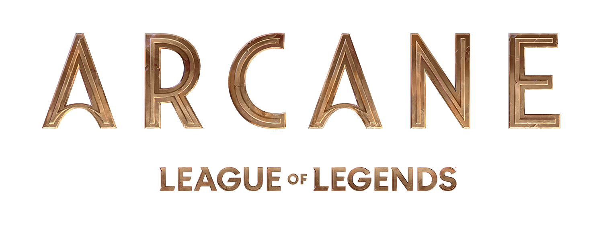

Historia
La historia se desarrollará en las siguientes dos ciudades: Piltover y Zaun. Las tensiones entre estas dos ciudades se desbordan con la creación de Hextech, una forma en que cualquier persona es capaz de controlar la energía mágica.
En Zaun, una nueva droga transforma a los humanos en monstruos. La rivalidad que existe entre estas dos ciudades divide a familias y amigos, ya que ‘Arcane’ da vida a las relaciones que dan forma a algunos de los famosos campeones de League of Legends como:
Aunque Arcane se centra solo en estas dos ciudades, estas pertenecen al mundo Runaterra. Piltover es la ciudad académica y científica, mientras que Zaun es todo lo contrario.
Muchas de las personas más inteligentes de Runaterra comenzaron en Zaun, pero una educación mucho más dura ha colocado el progreso sobre la moralidad en la mente de muchos.